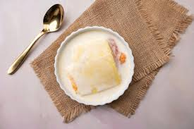

Apricot-Delight

Ingredients
- 2 cans (5-1/2 ounces each) apricot nectar, divided
- 1 package (.3 ounces) sugar-free orange gelatin
- 1 package (1 ounce) sugar-free instant vanilla pudding mix
- 2/3 cup nonfat dry milk powder
- 1 carton (8 ounces) frozen reduced-fat whipped topping, thawed
- 5 cups cubed angel food cake
- 1 can (15 ounces) reduced-sugar apricot halves, drained and sliced
Steps
- In a microwave-safe bowl, microwave 1 cup apricot nectar on high for 50-60 seconds or until hot. Sprinkle gelatin over hot nectar; stir until gelatin is completely dissolved, about 5 minutes. Set aside to cool.
- In a large bowl, combine remaining apricot nectar and enough water to measure 1-1/4 cups; whisk in pudding mix and milk powder for 1-2 minutes. Whisk in cooled gelatin; fold in whipped topping and cake.
- Pour into an 11x7-in. dish. Refrigerate for 2-4 hours. Garnish with apricot slices.